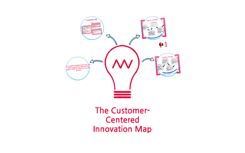
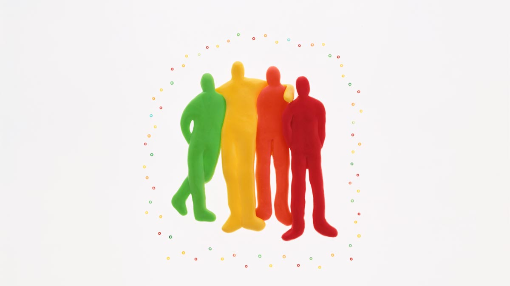

|
 |
 |
 |
 |
| MISSION |
VISION |
OUR VALUES |
AGILITY |
CUSTOMER-ORIENTED INNOVATION |
| Build the best team of professionals with the illusion of transforming and improving companies and society through technology from specialization in the latest solutions and in the different challenges of the market. Do it as a large family, made up of good people who enjoy becoming a global benchmark with a vocation for growth from their own land. Public and private organizations work with us because we are experts in solving their technology needs and challenges. |
To become the most attractive technology company for professionals who want to transform society and businesses, and the technology partner for companies that need to incorporate technology to improve and optimize their businesses. |
Innovate with customer orientation in an agile way in new products and services, through technology, taking advantage of opportunities and solving the needs of society and companies, always with honesty and closeness. Being good people, managing to be excellent due to our specialization and level of quality as a result of the commitment and teamwork of our people. |
We are very quick in making decisions, solving the needs of our clients, launching new products, reinventing ourselves... Our people and their interactions are the priority over processes and tools. We believe that the results are more important than the documentation or the process followed. Collaboration is the solution to the changes that occur. |
Without a doubt, the origins and success of our company would not be understood without a culture based on technological innovation. Thanks to understanding that technology and research, in themselves, have no value if it is not with the aim of solving a series of needs, both at a business and social level, we have managed to achieve this success. That is why we always understand innovation close to the client or the user with the aim of allowing things to be done better. This philosophy has allowed us, hand in hand with clients, to bring multiple technological products to market in the main sectors where we operate and extend this work philosophy to each project that we undertake today. |
|
 |
 |
 |
|
| USE OF OPPORTUNITIES |
TECHNOLOGICAL SPECIALIZATION |
GOOD PEOPLE |
TEAMWORK |
COMMITMENT |
| We understand that every day should be a blank page and changes or problems are opportunities for improvement. We see in every change, in every problem, an opportunity. This vision, together with paying attention to technological and sector trends, taking risks and maintaining a philosophy of continuous learning, has made us evolve throughout the company's history. |
Our company is a cluster made up of multiple areas and business and competition companies. Each of these areas and companies carries out its activity around its own technology, market or solution or that of third parties, providing a differential value in the market. We provide added value compared to global consultants but as a whole, it represents a solvent company, with the ability to address global solutions and carry out large projects, without limitations for access to international markets and with the ability to finance emerging businesses and investment or expansion projects. with structural needs. |
Being a good gene must be a condition to belong to our company. Our culture, our work model and our ability to attract and retain are largely based on how we relate to each other. The fruit of all this is a unique work ecosystem and a feeling of belonging under which we all feel identified. We firmly believe that, in addition, this culture has its echo in how we relate to our clients and how we face each new project. And besides, we want to enjoy what we do and it is difficult to enjoy if you are not surrounded by good people. |
One of the keys to our company's success has been the formation of "a great work team". For us, developing projects successfully does not depend solely on having good professionals, but on the creation of models based on diversity and a commitment to talent as the basis and axis of the company's future. |
For the commitment is to give the maximum of our capacities in order to carry out each initiative, activity or project. Among our workers we have established a bond that relates work and emotional issues and the result is a climate and environment based on commitment and motivation to achieve common goals. This vision makes us face each project in which we work as a differential human and professional involvement. |